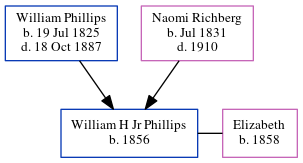

William H Jr Phillips 1856 -
[ Home ] | [ Calendar ] | [ Surnames Index ] | [ Census Index ] | [ Family History ]The child of William Phillips (a virginia phillips said that he was a carpenter and contractor. he built grady hospital in atlanta. he also worked on the masonic temple in atlanta. the 1850 census confirms he was a carpenter) and Naomi Richberg, William Phillips, the great-great-uncle of Michele Copp (née Phillips), was born in South Carolina, USA in 18561,2,3,4. He and was married to Elizabeth.
During his life, he was living in Sumter, Sumter, South Carolina in 18601; in Sumter, Sumter, South Carolina in 18702 and in 18803; and in Atlanta Ward 1, Fulton, Georgia in 19004.
Parents
- William Hiram was born on Jul 19, 1825
- Naomi C was born in Jul 1831
Citations
- 1860 United States Federal Census Online publication - Provo, UT, USA: The Generations Network, Inc., 2004.Original data - United States of America, Bureau of the Census. Eighth Census of the United States, 1860. Washington, D.C.: National Archives and Records Administration, 1860. M653, 1
- 1870 United States Federal Census Online publication - Provo, UT, USA: The Generations Network, Inc., 2003.Original data - 1870. United States. Ninth Census of the United States, 1870. Washington, D.C. National Archives and Records Administration. M593, RG29, 1,761 rolls. Minnesota. Minnes (Residence Post Office: Sumter)
- 1880 United States Federal Census Online publication - Provo, UT, USA: The Generations Network, Inc., 2005. 1880 U.S. Census Index provided by The Church of Jesus Christ of Latter-day Saints © Copyright 1999 Intellectual Reserve, Inc. All rights reserved. All use is subject to the limite
- 1900 United States Federal Census Online publication - Provo, UT, USA: MyFamily.com, Inc., 2004.Original data - United States of America, Bureau of the Census. Twelfth Census of the United States, 1900. Washington, D.C.: National Archives and Records Administration, 1900. T623, 1854 rolls.
Family Tree
Generated by ged2site. Last updated on Jun 6, 2024